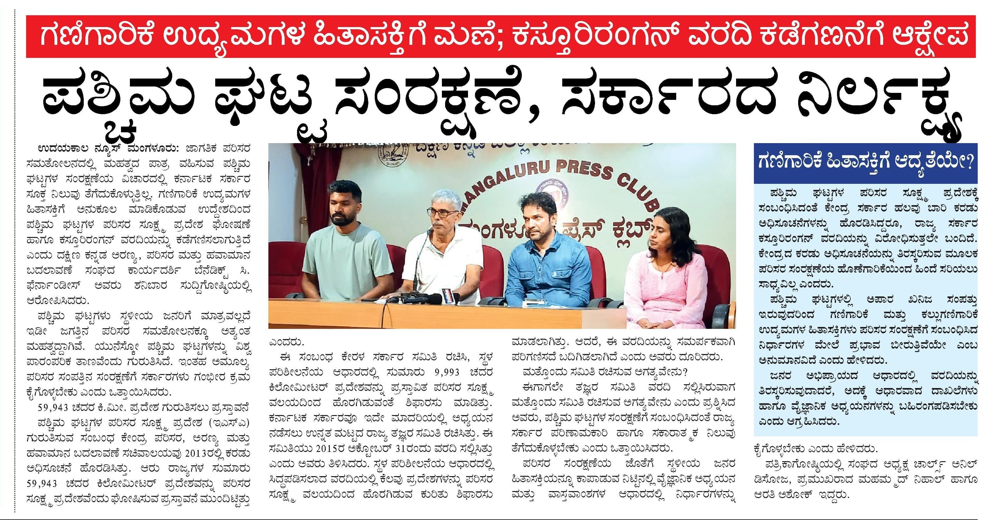
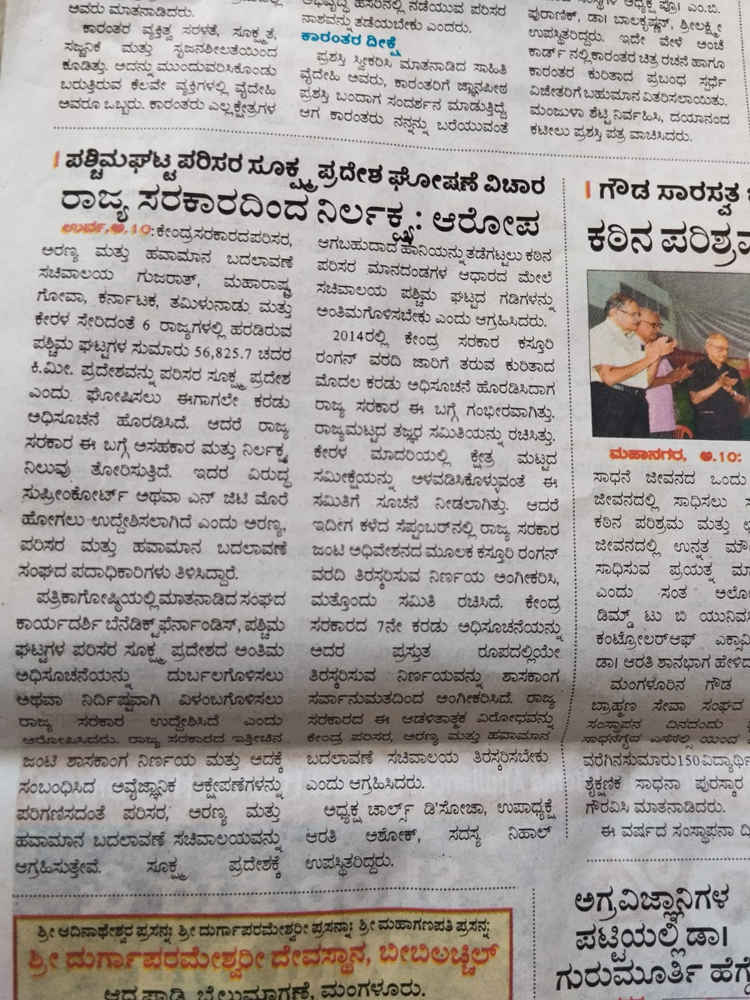
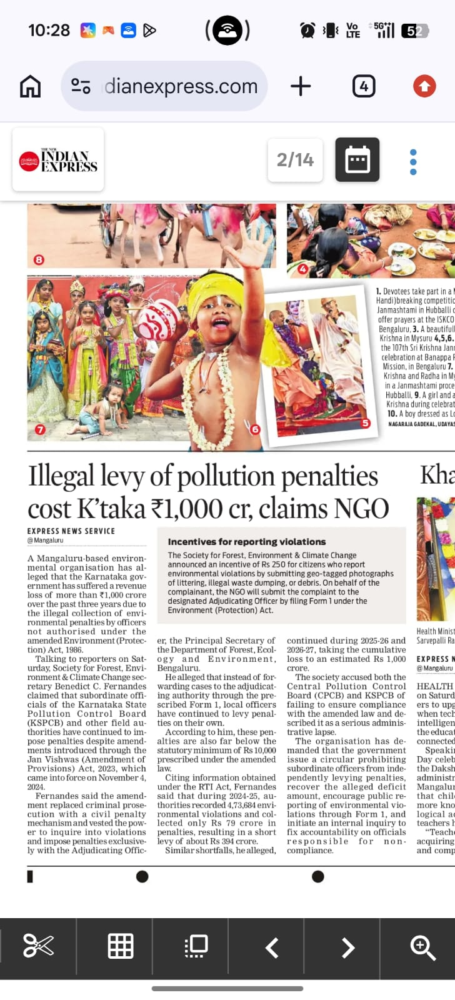
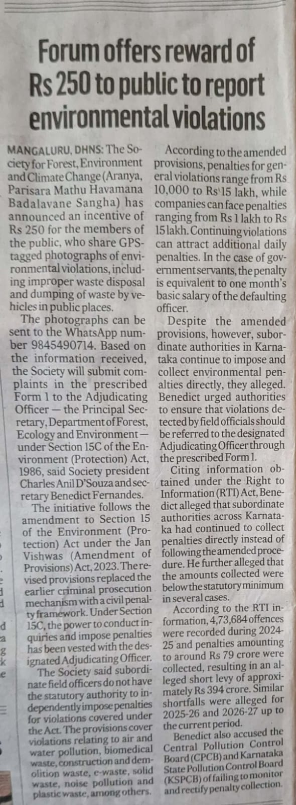

UDAYAKALA NEWS
Kannada press coverage
Mangaluru · October 10, 2026

View newspaper clipping →MEDIA & PRESS
News reports, press coverage and public initiatives reflecting SFECC's work for the environment across Coastal Karnataka.
FEATURED COVERAGE
10 October 2026 · Mangaluru
Following the Karnataka Government's decision to again reject the Kasturirangan Committee recommendations concerning the Western Ghats, SFECC raised concerns over the continued delay in providing stronger ecological protection to this sensitive landscape.
At a press conference held in Mangaluru on 10 October 2026, SFECC highlighted the need to protect the Western Ghats while ensuring that conservation measures are approached through informed and responsible public policy.
UDAYAKALA NEWS
Mangaluru · October 10, 2026

View newspaper clipping →KANNADA PRESS
Mangaluru · October 10, 2026

View newspaper clipping →VIDEO COVERAGE
Mangaluru · October 10, 2026
▶ Watch video reportPREVIOUS COVERAGE
05 September 2026 · Mangaluru
SFECC raised concerns over the unauthorised collection of environmental penalties and called for greater transparency and accountability in environmental enforcement.
SFECC also announced a ₹250 incentive encouraging citizens to report environmental violations through geo-tagged photographs.
THE NEW INDIAN EXPRESS
Express News Service · Mangaluru · September 5, 2026

View newspaper clipping →DECCAN HERALD
DHNS · Mangaluru · September 5, 2026

View newspaper clipping →NAMMA MEDIA
Mangaluru · September 5, 2026
▶ Watch Namma Media reportMEDIA ARCHIVE
Mangaluru Press Conference · 10 October 2026
2 newspaper reports · 1 video reportMangaluru Press Club · 05 September 2026
2 newspaper reports · 1 video reportSFECC